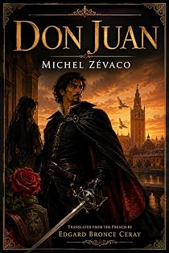

Don Juan
The legend of the great seducer — a novel of cape and sword
by Michel Zévaco · translated by Edgard Bronce-Ceraypar Michel Zévaco · traduit par Edgard Bronce-Ceray
The bookLe livre
Evening, 19 November 1539, on the Spanish bank of the Bidassoa, at the hour when darkness gathers. The last notes of a goatherd's pipe fall into an enormous silence. Twenty lords stand rigid in their armour among the broom, and alone at the water's edge one man stares across the frontier with a hungry look. Zévaco's Don Juan is a novel of cape and sword before it is a legend.
Le soir du 19 novembre 1539, sur la rive espagnole de la Bidassoa, à l'heure où l'ombre gagne. Les dernières notes d'un pipeau de chevrier tombent dans un silence immense. Vingt seigneurs se tiennent raides dans leur armure parmi les genêts, et seul au bord de l'eau un homme fixe au-delà de la frontière un regard avide. Le Don Juan de Zévaco est un roman de cape et d'épée avant d'être une légende.
From the opening pagesLes premières pages
It was on the evening of the 19th of November, 1539, that this came to pass; it was towards the hour when darkness creeps and gathers about all things. Picture to yourself that wild corner of the Spanish bank of the Bidassoa, and that vast silence into whose depths fell the last notes of a goatherd’s pipe as he withdrew toward his fold. Among those motionless clumps of broom, call up the imposing group of twenty lords rigid in their armour; and, quite alone at the river’s edge, fixing beyond the frontier an avid, questioning gaze, that horseman clad in black velvet as the portraits of the age show him to us, his breast chained with the insignia of the Golden Fleece.
In the shadows that came down from the Pyrénées, he seemed cast in bronze.
But upon the screen of the night, in striking relief, stood out his pale face, framed by a short and bushy beard — a face whose glacial smile was fixed upon pitiless lips, the wilful and obstinate face, the indecipherable face of the Emperor Charles the Fifth!
He flung a brief question to the ferryman of the barge, invisible in the vapours of the further shore. And as the answer came back to him in the negative, he made a furious gesture, and his torment rose to his throat in harsh, metallic words:
“So then, gentlemen, we shall not see the Commander Ulloa this evening. Eight days! Eight mortal days that I have awaited King François’s answer! And meanwhile Flanders is organizing, Flanders is about to escape us, Flanders is escaping me — but I will, by hell…”
He bowed his head suddenly: far off, the thin bell of a monastery was ringing the angelus — and he murmured:
“Ave Maria, gratia plena…”
“Oh!” he growled, drawing himself erect, “to be able to fling myself upon those impostors who prate of liberty; to thrust their blasphemy back down their throats; to melt in the fire of the stake that accursed Roelandt — the famous tocsin of Ghent — which drives them to frenzy, and to turn their rebel earth into a lake of blood, from Ghent to Liège! Yes; but I must arrive in time. François must let me pass through France! Ulloa, Ulloa, what are you bringing me?”
Quivering and pensive, Charles the Fifth contemplated the mute river. A few minutes more he waited. Then, wheeling his horse about:
“To our lodgings, gentlemen. This evening again, the Commander will not return!”
“Ho, ho, over yonder!” the ferryman sent up at that instant. “Halloo, ho!”
They all started; and, turned once more toward the river, they heard a gallop which, an instant afterward, stopped short at the brink of the Bidassoa. At once, out of the depths of the mists, loomed the broad barge that the ferryman was hauling by the rope. Upon the forward platform, mounted on a solid horse, his athletic stature silhouetted in red by the light of a torch, there appeared a man with a white beard, majestic in bearing, formidable of aspect as the knights of those ages of iron: don Sanche d’Ulloa, Commander — that is, Governor — of Seville and of Andalusia, secret ambassador of Charles the Fifth to François Ier.
The Emperor’s burning anxiety broke its bounds and leapt forth:
“One word, Ulloa, one only: is it no?”
“It is yes, sire!”
Instantly, every sign of agitation vanished from Charles the Fifth.
“Be welcome, my brave messenger!” he said simply.
But doubtless there passed in those few words the breath of vengeance, for a menacing shudder shook the escort, set the steel armour clashing, and a frenzied clamour rose into the night:
“Death to the burghers of Flanders!”
The Commander came ashore. Then one might have seen that he was livid, and that a convulsive trembling shook him. Surely fear was crushing this warrior who, in ten pitched battles, in as many skirmishes and assaults, without counting the duels, had tranquilly looked death in the face. Toward the sky, toward one precise point of the sky, he was lifting haggard eyes.
“I am waiting!” said the Emperor.
With a violent effort, Ulloa recovered his composure, and bowing with that haughty respect of the grandees of Spain:
“Sire, the road is open. With such retinue as shall please you, you may enter France, and His Majesty the king of that realm is preparing unforgettable receptions for you. To reach Flanders, sire, you shall pass by the triumphal way.”
“Ah!” said the Emperor. “He is a good brother, my brother François!”
“Honour to the king of France!” the escort underscored, like the chorus of an antique tragedy.
“That is not all. To take from Your Majesty every lingering thought of disquiet, the king has sent to Bayonne the Constable de Montmorency, with the dauphin Henri and the young duc d’Orléans; at the same hour in which you set foot upon the soil of France, the king’s two sons will enter Spain, there to remain as hostages until you shall have reached one of the cities of the Empire.”
“Praised be Our Lady!” said the Emperor. “Ulloa, my thanks! Tomorrow, gentlemen, we cross the Bidassoa and ride without halt to Bayonne. But I will have no hostages. The two princes shall remain among us and be our companions of the road; I will not suffer myself to be vanquished in magnanimity. As for you, Ulloa, you have succeeded beyond my hope… Why, what ails you, Commander?”
Ulloa gave a start, like a man brought back from some far-off dream. He wiped away the cold sweat that streamed at his temples. But, promptly recovering himself:
“Sire,” he said, “if I have been able to bring to a good end the embassy with which you honoured me, it is thanks to a brave and loyal French gentleman who has had the courage to make the voice of justice heard at the Court of France…”
“Coming from you, that is the finest of eulogies. Who is this man of heart?”
“Man of heart: you have said it!… His name is the comte Amauri de Loraydan.”
“Ah! The name is not unknown to me. The Loraydans, on every field of battle, have been rough adversaries to us. There was a Loraydan killed at Pavia, I believe. But several of ours went down first beneath his blows. A proud race, but poor.”
“He of whom I speak is the son of the Loraydan of Pavia. Whether he be rich in anything but valour, I do not know. But, despite his youth, he is one of the counsellors most heeded by King François. In good part, it is to him that you owe your entering France without conditions. At the Louvre he was my firmest — I ought to say my only — support. When I left Paris with M. de Montmorency and the princes, he insisted upon accompanying me as far as Angoulême, working still upon the Constable as he had worked upon the king…”
“Amauri de Loraydan. Good. I shall remember. If it rests with me, his fortune is made. For not only shall I speak of him to the king of France in the terms that are fitting, but I myself shall know how to make him accept the proofs of my gratitude.”
The excerpt ends here — about 1,221 words of the published edition.L'extrait s'arrête ici — environ 1,221 mots de l’édition parue.
KindlePaperbackBrochéContextContexte
Zévaco was a schoolmaster, then a cavalry officer, then an anarchist journalist who fought duels over his editorials and went to prison for his convictions. He came to the novel in his forties and conquered it at once: from 1900 his serials ran in the great Paris dailies and were read by millions. Sartre, remembering his childhood in Les Mots, called him a writer of genius. He has been read in Persian, Turkish, Arabic, Romanian and Spanish. In English, for more than a century, he was effectively unavailable. The Zévaco Project is the first attempt ever made to translate his complete novels — one volume at a time, until the canon is closed.
Zévaco fut maître d'école, puis officier de cavalerie, puis journaliste anarchiste — un homme qui se battait en duel pour ses éditoriaux et fit de la prison pour ses convictions. Il vint au roman passé la quarantaine et le conquit aussitôt : à partir de 1900, ses feuilletons paraissaient dans les grands quotidiens parisiens et se lisaient par millions. Sartre, se souvenant de son enfance dans Les Mots, le tenait pour un écrivain de génie. On l'a lu en persan, en turc, en arabe, en roumain, en espagnol. En anglais, pendant plus d'un siècle, il fut pratiquement introuvable. Le Projet Zévaco est la première tentative jamais faite de traduire son œuvre romanesque complète — un volume après l'autre, jusqu'à la clôture du corpus.
The whole programmeTout le programme